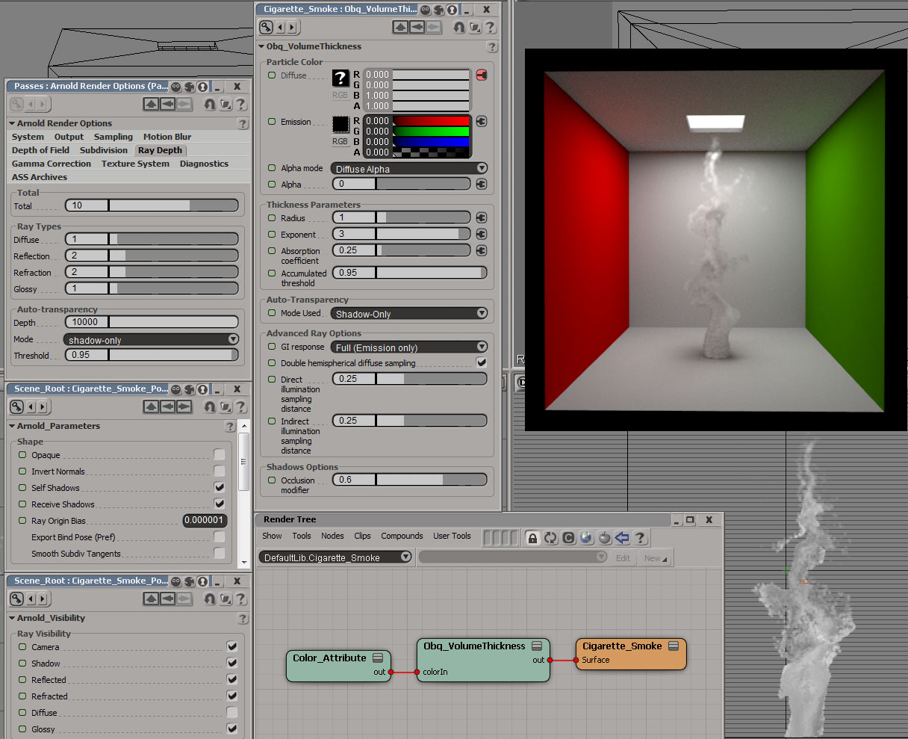

Obq_VolumeThickness
Class
Material
Output
Color RGBA
Synopsis
Obq_VolumeThickness is a particle density shader ideal for rendering smoke or other volumes.
Warning : This depricated shader was created before Arnold went volume.
Usage
Use it like any other shader and get the particle color with modified alpha based on the age percentage. You could also plug a fractal to modify the radius of the particles and give it a little bit of variation.
Note : This is a surface shader (surface port), not a volume shader.

Fig.1 : A thick gray smoke emanates from the ground.
Particle Color
Diffuse [colorIn]
The diffuse color of the particle.
Emission [emissionColor]
The diffuse color of the particle.
Alpha Mode [alphaMode]
Which alpha parameter will be used for this particle. The alpha is a global modifier of thickness. A particle with an alpha of 0 will be completely transparent while an alpha of 1 will not modify the thickness parameters. Choices are :
- Alpha parameter.
- Diffuse alpha.
- Emission alpha.
- Max of diffuse and emission.
Alpha [alpha]
The alpha paramter.
Thickness Parameters
Radius [radius]
In order to calculate the thickness of a particle, this shader makes the assumption that all particles are spherical and requires the radius instead of calculating the thickness with a ray. The opacity of that particle is then calculated using the thickness and the absorption coefficient.
Note : The formula for opacity used here is : opacity = alpha*(1-e^(-absorption*2*radius* NdotR^exponent)).
Exponent [exponent]
To give a more beautiful opacity falloff, you can raise the exponent.
Note : An exponent of 0 will give a sharp look while an exponent of 4 will give a more fluffy look.
Absorption Coefficient [absorption]
The higher the coefficient, the less transparent the particle will be.
Accumulated Threshold [accumulatedThicknessThreshold]
Similar to the auto-transparency threshold, when this accumulated opacity is reached, it is considered as opaque.
Auto-Transparency
Mode Used [autoTransparencyMode]
Warning : This parameter is no longer used because this render options was removed in Arnold.
Advanced Ray Options
GI response [diffuseMode]
When a particle is hit with a GI ray, many options are available to approximate a particle contribution to GI and speed up the rendering.
| • | Full | : | the full particle shading will be calculated along the GI ray. | |
| • | Full (Emission only) | : | only the emission color will be transmitted along the GI ray. | |
| • | Direct*sqrt(opacity) | : | the direct lighting+emission multiplied by the square root of the opacity of the first particle hit will be return. | |
| • | Direct*opacity | : | the direct lighting+emission multiplied by the opacity of the first particle hit will be return. | |
| • | Direct | : | the direct lighting+emission of the first particle hit will be return. | |
| • | None | : | particles don't contribute to GI of other object. Note that this is not the same as disabling the diffuse visibility of the point cloud. |
Double hemispherical GI Sampling [doubleHemisphericalDiffuse]
Shoots diffuse samples in both hemispheres.
Direct illumination sampling distance [lightPropagationDistance]
Because particles are often near each other and illumination generally varies smoothly along a ray, using this option can speed up rendering by lowering the amount of time the direct lighting is calculated.This ensures that the direct lighting will only be called when there is at least X units between a point and the previously stored direct lighting sample point.
Indirect illumination sampling distance [lightPropagationDistanceDiffuse]
Like the previous parameter but for GI rays.
Shadows Options
Occlusion modifier [shadowModifier]
Because using a low auto-transparency depth leads to darker shadows, you can counter the effect by lowering this value.